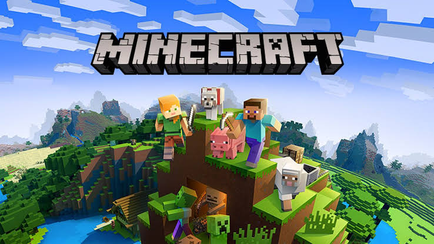

A história do Minecraft começou em maio de 2009, quando o programador sueco Markus "Notch" Persson desenvolveu um protótipo em apenas um fim de semana. Inspirado por jogos como Infiniminer, ele batizou o projeto inicialmente de Cave Game e focou-se numa mecânica simples de colocar e quebrar blocos num mundo tridimensional. Notch decidiu disponibilizar o jogo ainda em fases Alfa e Beta por um preço baixo, utilizando o dinheiro das vendas para financiar o desenvolvimento contínuo. Esse modelo de acesso antecipado atraiu uma comunidade enorme e fiel, o que permitiu que ele largasse o emprego para fundar o estúdio Mojang em 2010. Foi durante essa fase de testes que um erro de programação ao tentar modelar um porco deu origem ao Creeper, que se tornaria o monstro mais icónico do jogo. O lançamento oficial da versão 1.0 ocorreu em 18 de novembro de 2011, introduzindo um objetivo final ao modo de sobrevivência: derrotar o Ender Dragon na dimensão The End. Com o sucesso estrondoso e a crescente pressão pública, Notch decidiu afastar-se do projeto e, em 2014, vendeu a Mojang e os direitos do jogo à Microsoft por 2,5 mil milhões de dólares. Sob a nova gestão e a liderança criativa de Jens "Jeb" Bergensten, o jogo expandiu-se agressivamente para além dos computadores, recebendo versões para todas as consolas de videojogos, telemóveis e dispositivos de realidade virtual. A equipa focou-se em atualizações constantes que adicionaram novos biomas, criaturas e mecânicas, mantendo a experiência sempre renovada. Hoje, o Minecraft consolidou-se como o jogo mais vendido da história, ultrapassando as 300 milhões de cópias, e transformou-se num fenómeno cultural gigante que inclui uma versão educativa usada em escolas, livros, brinquedos, jogos derivados e adaptações para o cinema. Se quiseres continuar a explorar este universo, posso contar-te as lendas e teorias mais famosas criadas pelos jogadores sobre o passado misterioso do mundo de Minecraft ou falar sobre os principais jogos derivados (spin-offs) da franquia.